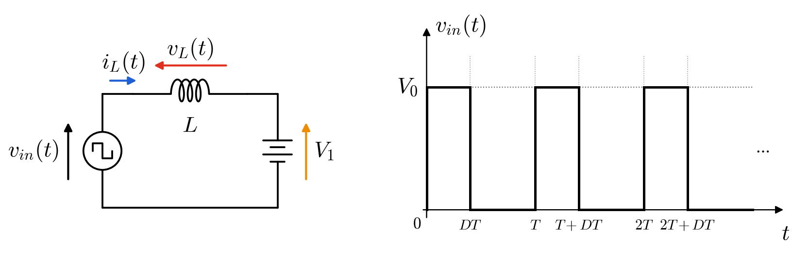
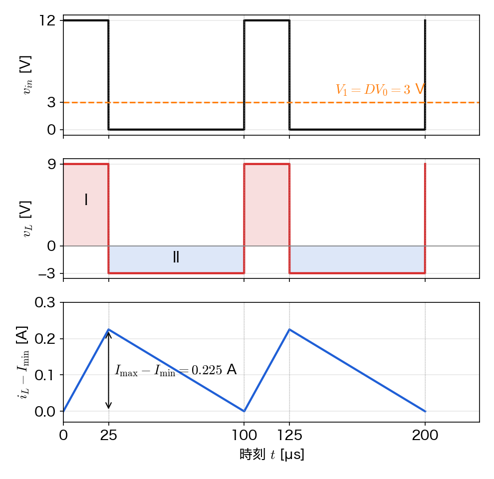
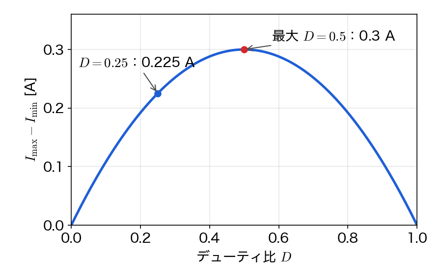
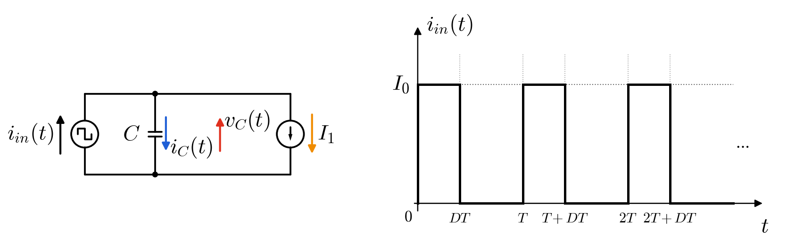
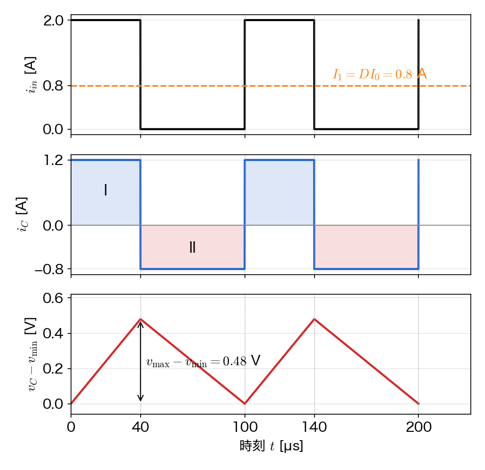
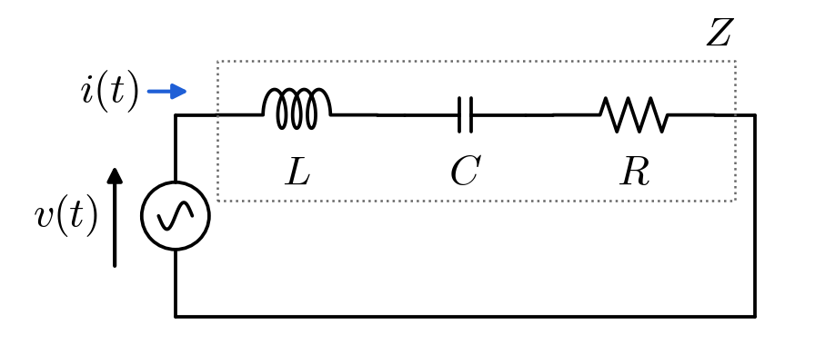
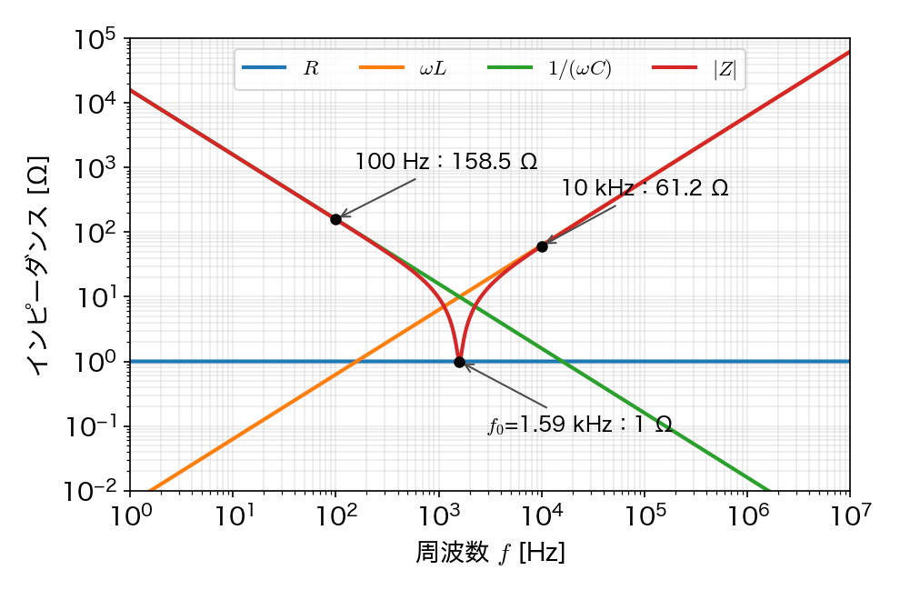
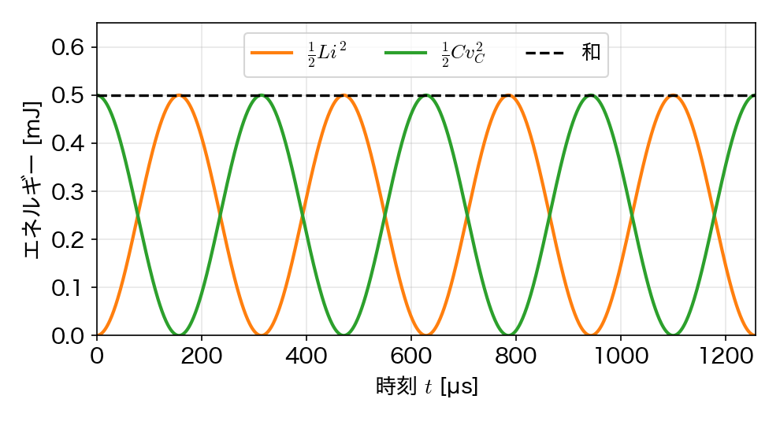
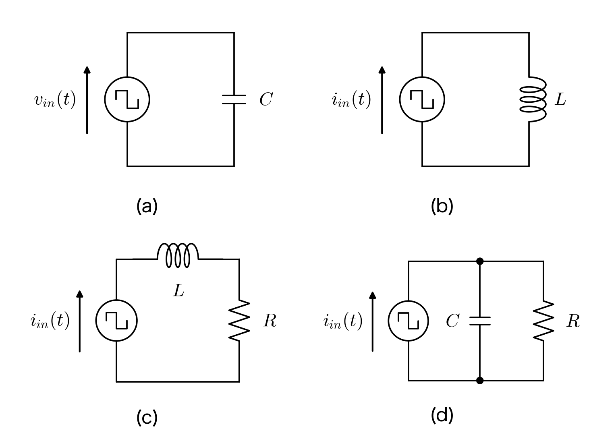

🗒️ 第4回は「スイッチングの電圧をコイルに、スイッチングの電流をコンデンサにかけると、定常状態で何が決まるか」を手で確かめる問題です。問題1は第1回と同じ $12\,[\mathrm{V}]$ から $3\,[\mathrm{V}]$（$D = 0.25$）にしてあって、第1回では抵抗にかかっていた方形波が、コイルを入れると平均値 $DV_0$ の直流に近づく、という話につながります。問題2は問題1の電圧と電流、$L$ と $C$ を入れ替えただけの形です。問題3はスライドと同じ $L = 1\,[\mathrm{mH}]$、$C = 10\,[\mu\mathrm{F}]$、$R = 1\,[\Omega]$ で、問題4は「つないではいけない組み合わせ」です。
下図のように、方形波の電圧源$v_{in}(t)$、インダクタンス$L$のコイル、直流電圧$V_{1}$（負荷を電圧源とみなしたもの）を直列に接続した。$v_{in}(t)$は、周期$T$のうち$0\leq t\lt DT$で$V_{0}$、$DT\leq t\lt T$で$0$になる（$D$はデューティ比）。$V_{0}=12\,[\mathrm{V}]$、スイッチング周波数$10\,[\mathrm{kHz}]$、$D=0.25$、$L=1\,[\mathrm{mH}]$とする。以下の問いに答えよ。

$0\leq t\lt DT$と$DT\leq t\lt T$のそれぞれについて、コイルにかかる電圧$v_{L}$を$V_{0}$、$V_{1}$を用いて表せ。
出発の式：KVL（ループを一周すると、電圧の上がり下がりの合計は $0$）。電源の電圧から、コイルと $V_1$ にかかる電圧を引いていきます。
$$v_{in} - v_L - V_1 = 0$$$v_L$ を左辺に残すように移項します。
$$v_L = v_{in} - V_1$$あとは $v_{in}$ に各区間の値を入れるだけです。オンの区間（$0 \le t < DT$）は $v_{in} = V_0$、オフの区間（$DT \le t < T$）は $v_{in} = 0$ なので、
$$v_L = V_0 - V_1 \quad (0 \le t < DT)$$ $$v_L = 0 - V_1 = -V_1 \quad (DT \le t < T)$$オフの区間ではコイルに負の電圧がかかる、というところがポイントです。ここで電流が減るので、電流がいくらでも増えていく、ということにならずにすみます。
コイルの電流$i_{L}(t)$が増え続けも減り続けもしない（1周期で元の値に戻る）状態を定常状態という。定常状態になるための$V_{1}$を$D$と$V_{0}$で表し、その値を求めよ。
出発の式：コイルの枝構成式
$$v_L = L\,\frac{di_L}{dt}$$両辺を $L$ で割って、
$$\frac{di_L}{dt} = \frac{1}{L}\,v_L$$両辺を $t = 0$ から $T$ まで（1 周期）積分します。左辺は「微分を積分すると元に戻る」ので $i_L(T) - i_L(0)$ になります。
$$i_L(T) - i_L(0) = \frac{1}{L}\int_0^{T} v_L(t)\,dt$$定常状態は「1 周期で電流が元に戻る」こと、つまり $i_L(T) = i_L(0)$ なので左辺が $0$ です。よって
$$\int_0^{T} v_L(t)\,dt = 0$$積分をオンの区間とオフの区間に分けて、1-1 の $v_L$ を入れます。どちらの区間も $v_L$ は一定なので、積分は「高さ × 幅」です。
$$\int_0^{DT} (V_0 - V_1)\,dt + \int_{DT}^{T} (-V_1)\,dt = 0$$ $$(V_0 - V_1)\,DT - V_1\,(T - DT) = 0$$つまり、オンの区間の面積（1-3 の図の I）とオフの区間の面積（II）が等しい、ということです。かっこを外すと
$$DTV_0 - DTV_1 - TV_1 + DTV_1 = 0$$$-DTV_1$ と $+DTV_1$ が消えて
$$DTV_0 - TV_1 = 0 \quad\Rightarrow\quad TV_1 = DTV_0$$両辺を $T$ で割って、数値を入れると
$$V_1 = DV_0 = 0.25 \times 12\,[\mathrm{V}] = 3\,[\mathrm{V}]$$$V_1$ は $v_{in}$ の時間平均そのものです。第1回の問題2で抵抗にかかっていた方形波の平均と同じ値で、デューティ比で出力電圧を決められる、というのがここでも言えます。
定常状態における$v_{L}(t)$と$i_{L}(t)$の波形を、$0\leq t\leq 2T$の範囲で描け。さらに、電流の振動の大きさ$I_{\rm max}-I_{\rm min}$を$D$、$T$、$V_{0}$、$L$で表し、その値を求めよ。
まず時間を出しておきます。周期はスイッチング周波数の逆数です。
$$T = \frac{1}{f_\mathrm{SW}} = \frac{1}{10\times10^{3}\,[\mathrm{Hz}]} = 1\times10^{-4}\,[\mathrm{s}] = 100\,[\mu\mathrm{s}]$$ $$DT = 0.25 \times 100\,[\mu\mathrm{s}] = 25\,[\mu\mathrm{s}], \qquad (1-D)\,T = 0.75 \times 100\,[\mu\mathrm{s}] = 75\,[\mu\mathrm{s}]$$1-1 の式に $V_0 = 12\,[\mathrm{V}]$、$V_1 = 3\,[\mathrm{V}]$ を入れると、$v_L$ の値は
$$v_L = V_0 - V_1 = 12 - 3 = 9\,[\mathrm{V}] \ \ (\text{オン}), \qquad v_L = -V_1 = -3\,[\mathrm{V}] \ \ (\text{オフ})$$出発の式：コイルの枝構成式 $v_L = L\,\dfrac{di_L}{dt}$。これを $L$ で割って、時刻 $t_0$ から $t$ まで積分すると、左辺は $i_L(t) - i_L(t_0)$ になるので
$$i_L(t) = i_L(t_0) + \frac{1}{L}\int_{t_0}^{t} v_L(t')\,dt'$$オンの区間（$0 \le t < DT$）：$t_0 = 0$ とし、そのときの電流を $i_L(0) = I_\mathrm{min}$ とします。$v_L = V_0 - V_1$ は一定なので積分の外に出せて、$\int_0^t dt' = t$ です。
$$i_L(t) = I_\mathrm{min} + \frac{1}{L}\int_0^{t} (V_0 - V_1)\,dt' = I_\mathrm{min} + \frac{V_0 - V_1}{L}\,t$$オフの区間（$DT \le t < T$）：$t_0 = DT$ とし、そのときの電流（オンの区間の最後の値）を $i_L(DT) = I_\mathrm{max}$ とします。$v_L = -V_1$ も一定なので、$\int_{DT}^t dt' = t - DT$ です。
$$i_L(t) = I_\mathrm{max} + \frac{1}{L}\int_{DT}^{t} (-V_1)\,dt' = I_\mathrm{max} - \frac{V_1}{L}\,(t - DT)$$どちらも $t$ の1次式なので、$i_L$ は各区間で直線です。$t$ の係数が傾きで、数値を入れると
$$\text{オン}：\frac{V_0 - V_1}{L} = \frac{9\,[\mathrm{V}]}{1\times10^{-3}\,[\mathrm{H}]} = 9\times10^{3}\,[\mathrm{A/s}], \qquad \text{オフ}：-\frac{V_1}{L} = \frac{-3\,[\mathrm{V}]}{1\times10^{-3}\,[\mathrm{H}]} = -3\times10^{3}\,[\mathrm{A/s}]$$なので、$v_L$ は $+9\,[\mathrm{V}]$ と $-3\,[\mathrm{V}]$ を行き来する方形波、$i_L$ はオンで増えてオフで減る三角波です。

電流の振動の大きさは、オンの区間で増えた分です。$\dfrac{di_L}{dt} = \dfrac{v_L}{L}$ を $0$ から $DT$ まで積分すると、
$$I_\mathrm{max} - I_\mathrm{min} = \frac{1}{L}\int_0^{DT} v_L\,dt = \frac{(V_0 - V_1)\,DT}{L}$$1-2 の $V_1 = DV_0$ を入れて、$V_0 - DV_0 = (1-D)V_0$ とまとめると、
$$I_\mathrm{max} - I_\mathrm{min} = \frac{DT\,(1-D)\,V_0}{L}$$数値を入れます。分子から計算すると $0.25 \times 0.75 \times 12 = 2.25$ なので、
$$I_\mathrm{max} - I_\mathrm{min} = \frac{0.25 \times 100\times10^{-6} \times 0.75 \times 12}{1\times10^{-3}} = \frac{2.25 \times 100\times10^{-6}}{1\times10^{-3}} = \frac{225\times10^{-6}}{1\times10^{-3}} = 225\times10^{-3} = 0.225\,[\mathrm{A}]$$「傾き × 時間」で出しても同じです。$9\times10^{3}\,[\mathrm{A/s}] \times 25\times10^{-6}\,[\mathrm{s}] = 225\times10^{-3} = 0.225\,[\mathrm{A}]$。
オフの区間で減る分も $3\times10^{3}\,[\mathrm{A/s}] \times 75\times10^{-6}\,[\mathrm{s}] = 0.225\,[\mathrm{A}]$ で、増えた分と同じになっていることも確かめておいてください。同じでなければ定常状態ではありません。
なお、$V_1$ を電圧源とみなした回路なので、電流の平均値（$I_\mathrm{min}$ の値）はこの問題の条件だけでは決まりません。決まるのは振動の大きさだけです。負荷が抵抗 $R$ なら平均は $V_1/R$ になります。
電流の振動の大きさを半分にするには、$L$を何$[\mathrm{mH}]$にすれば良いか。また、$L$を変えずにスイッチング周波数で調整するなら何$[\mathrm{kHz}]$にすれば良いか。
出発の式：1-3 で出した振動の大きさの式です。$T = 1/f_\mathrm{SW}$ を入れて、$L$ と $f_\mathrm{SW}$ が見えるように書き直します。
$$I_\mathrm{max} - I_\mathrm{min} = \frac{DT\,(1-D)\,V_0}{L} = \frac{D(1-D)V_0}{L f_\mathrm{SW}}$$分子は $D(1-D)V_0 = 0.25 \times 0.75 \times 12 = 2.25\,[\mathrm{V}]$ で、$L$ にも $f_\mathrm{SW}$ にも関係しません。振動の大きさは分母の $L f_\mathrm{SW}$ に反比例するので、半分にするには $L f_\mathrm{SW}$ を 2 倍にすればよいです。
$L$ で調整する場合（$f_\mathrm{SW} = 10\,[\mathrm{kHz}]$ のまま）：
$$L = 2 \times 1\,[\mathrm{mH}] = 2\,[\mathrm{mH}], \qquad \frac{2.25}{2\times10^{-3} \times 10\times10^{3}} = \frac{2.25}{20} = 0.1125\,[\mathrm{A}]$$周波数で調整する場合（$L = 1\,[\mathrm{mH}]$ のまま）：
$$f_\mathrm{SW} = 2 \times 10\,[\mathrm{kHz}] = 20\,[\mathrm{kHz}], \qquad \frac{2.25}{1\times10^{-3} \times 20\times10^{3}} = \frac{2.25}{20} = 0.1125\,[\mathrm{A}]$$どちらも $0.225\,[\mathrm{A}]$ の半分の $0.1125\,[\mathrm{A}]$ になります。周波数を上げればコイルを大きくしなくてすむので装置は小さくなりますが、第1回でやったとおり、スイッチング損失は周波数に比例して増えます。
$V_{0}$、$T$、$L$を変えずに、$V_{1}=DV_{0}$を保ったまま$D$を変える。電流の振動の大きさが最大になる$D$とその値を求めよ。
出発の式：1-3 の振動の大きさの式です。$D$ に関係するところとしないところに分けておきます。
$$I_\mathrm{max} - I_\mathrm{min} = \frac{TV_0}{L} \times D(1-D)$$$D$ に関係しない部分は
$$\frac{TV_0}{L} = \frac{100\times10^{-6} \times 12}{1\times10^{-3}} = \frac{1200\times10^{-6}}{1\times10^{-3}} = 1.2\,[\mathrm{A}]$$なので、$D(1-D)$ が一番大きくなる $D$ を探せばよいです。かっこを外して平方完成します。
$$D(1-D) = D - D^2 = -\left(D^2 - D\right) = -\left(D^2 - D + \frac{1}{4}\right) + \frac{1}{4} = -\left(D - \frac{1}{2}\right)^2 + \frac{1}{4}$$$-\left(D - \frac{1}{2}\right)^2$ は $0$ 以下で、$D = 0.5$ のときだけ $0$ になります。なので $D = 0.5$ で最大値 $1/4$ をとります（$D - D^2$ を $D$ で微分して $1 - 2D = 0$ としても同じです）。そのときの振動の大きさは
$$I_\mathrm{max} - I_\mathrm{min} = \frac{TV_0}{4L} = 1.2\,[\mathrm{A}] \times \frac{1}{4} = 0.3\,[\mathrm{A}]$$
コイルを選ぶときは、使う $D$ の範囲で一番振動が大きくなるところ（$D = 0.5$ を含むならそこ）で考えておけば安心です。
下図のように、方形波の電流源$i_{in}(t)$、静電容量$C$のコンデンサ、直流電流$I_{1}$（負荷を電流源とみなしたもの）を並列に接続した。$i_{in}(t)$は、周期$T$のうち$0\leq t\lt DT$で$I_{0}$、$DT\leq t\lt T$で$0$になる。$I_{0}=2\,[\mathrm{A}]$、スイッチング周波数$10\,[\mathrm{kHz}]$、$D=0.4$、$C=100\,[\mu\mathrm{F}]$とする。以下の問いに答えよ。

$0\leq t\lt DT$と$DT\leq t\lt T$のそれぞれについて、コンデンサに流れる電流$i_{C}$を$I_{0}$、$I_{1}$を用いて表せ。
出発の式：上の節点での KCL（節点に入る電流と出る電流は等しい）。入ってくる $i_{in}$ が、コンデンサと $I_1$ に分かれます。出ていく向きを正にして書くと
$$-i_{in} + i_C + I_1 = 0$$$i_C$ を左辺に残すように移項します。
$$i_C = i_{in} - I_1$$オンの区間（$0 \le t < DT$）は $i_{in} = I_0$、オフの区間（$DT \le t < T$）は $i_{in} = 0$ を入れて、
$$i_C = I_0 - I_1 \quad (0 \le t < DT)$$ $$i_C = 0 - I_1 = -I_1 \quad (DT \le t < T)$$コンデンサの電圧$v_{C}(t)$が定常状態になるための$I_{1}$を$D$と$I_{0}$で表し、その値を求めよ。
出発の式：コンデンサの枝構成式
$$i_C = C\,\frac{dv_C}{dt}$$両辺を $C$ で割って 1 周期で積分します（1-2 と同じ手順です）。
$$v_C(T) - v_C(0) = \frac{1}{C}\int_0^{T} i_C(t)\,dt$$定常状態では $v_C(T) = v_C(0)$ なので左辺が $0$。積分を 2 つの区間に分けて、2-1 の $i_C$ を入れます。
$$\int_0^{DT} (I_0 - I_1)\,dt + \int_{DT}^{T} (-I_1)\,dt = 0$$ $$(I_0 - I_1)\,DT - I_1\,(T - DT) = 0$$$i_C$ の I と II の面積が等しい、という式です。かっこを外すと $-DTI_1$ と $+DTI_1$ が消えて
$$DTI_0 - DTI_1 - TI_1 + DTI_1 = 0 \quad\Rightarrow\quad DTI_0 - TI_1 = 0$$両辺を $T$ で割って、数値を入れると
$$I_1 = DI_0 = 0.4 \times 2\,[\mathrm{A}] = 0.8\,[\mathrm{A}]$$$I_1$ は $i_{in}$ の時間平均です。
定常状態における電圧の振動の大きさ$v_{\rm max}-v_{\rm min}$を$D$、$T$、$I_{0}$、$C$で表し、その値を求めよ。また、振動の大きさを$0.12\,[\mathrm{V}]$にするには、$C$を何$[\mu\mathrm{F}]$にすれば良いか。
時間と電流の値を出しておきます。
$$T = \frac{1}{10\times10^{3}\,[\mathrm{Hz}]} = 100\,[\mu\mathrm{s}], \qquad DT = 0.4 \times 100 = 40\,[\mu\mathrm{s}], \qquad (1-D)\,T = 0.6 \times 100 = 60\,[\mu\mathrm{s}]$$ $$i_C = I_0 - I_1 = 2 - 0.8 = 1.2\,[\mathrm{A}] \ \ (\text{オン}), \qquad i_C = -I_1 = -0.8\,[\mathrm{A}] \ \ (\text{オフ})$$出発の式：コンデンサの枝構成式 $i_C = C\,\dfrac{dv_C}{dt}$。これを $C$ で割って、時刻 $t_0$ から $t$ まで積分すると
$$v_C(t) = v_C(t_0) + \frac{1}{C}\int_{t_0}^{t} i_C(t')\,dt'$$オンの区間（$0 \le t < DT$）：$v_C(0) = v_\mathrm{min}$ とすると、$i_C = I_0 - I_1$ は一定なので
$$v_C(t) = v_\mathrm{min} + \frac{1}{C}\int_0^{t} (I_0 - I_1)\,dt' = v_\mathrm{min} + \frac{I_0 - I_1}{C}\,t$$オフの区間（$DT \le t < T$）：$v_C(DT) = v_\mathrm{max}$ とすると、$i_C = -I_1$ なので
$$v_C(t) = v_\mathrm{max} + \frac{1}{C}\int_{DT}^{t} (-I_1)\,dt' = v_\mathrm{max} - \frac{I_1}{C}\,(t - DT)$$どちらも直線です。振動の大きさは、オンの区間の式で $t = DT$ とおいたときの増えた分です。
$$v_\mathrm{max} - v_\mathrm{min} = v_C(DT) - v_C(0) = \frac{(I_0 - I_1)\,DT}{C}$$$I_1 = DI_0$ を入れて $I_0 - DI_0 = (1-D)I_0$ とまとめると、
$$v_\mathrm{max} - v_\mathrm{min} = \frac{DT\,(1-D)\,I_0}{C}$$数値を入れます。$0.4 \times 0.6 \times 2 = 0.48$ なので、
$$v_\mathrm{max} - v_\mathrm{min} = \frac{0.4 \times 100\times10^{-6} \times 0.6 \times 2}{100\times10^{-6}} = \frac{0.48 \times 100\times10^{-6}}{100\times10^{-6}} = 0.48\,[\mathrm{V}]$$「傾き × 時間」でも、$\dfrac{1.2\,[\mathrm{A}]}{100\times10^{-6}\,[\mathrm{F}]} \times 40\times10^{-6}\,[\mathrm{s}] = 0.48\,[\mathrm{V}]$。オフの区間で減る分も $\dfrac{0.8}{100\times10^{-6}} \times 60\times10^{-6} = 0.48\,[\mathrm{V}]$ で同じになります。

次に $C$ です。上の式を $C$ について解きます（両辺に $C$ をかけて、$v_\mathrm{max} - v_\mathrm{min}$ で割る）。
$$C = \frac{DT\,(1-D)\,I_0}{v_\mathrm{max} - v_\mathrm{min}}$$$v_\mathrm{max} - v_\mathrm{min} = 0.12\,[\mathrm{V}]$ を入れて、
$$C = \frac{0.4 \times 100\times10^{-6} \times 0.6 \times 2}{0.12} = \frac{48\times10^{-6}}{0.12} = 400\times10^{-6}\,[\mathrm{F}] = 400\,[\mu\mathrm{F}]$$振動の大きさは $C$ に反比例するので、$0.48\,[\mathrm{V}]$ を $0.12\,[\mathrm{V}]$（4 分の 1）にするには $C$ を 4 倍、と考えても同じ答えになります。
問題１で求めた式と比べると、どの量とどの量を入れ替えると同じ形になっているか答えよ。
出発の式どうしを並べてみます。問題1は KVL とコイルの枝構成式、問題2は KCL とコンデンサの枝構成式から出発しました。
$$v_{in} - v_L - V_1 = 0 \;\leftrightarrow\; i_{in} - i_C - I_1 = 0, \qquad v_L = L\,\frac{di_L}{dt} \;\leftrightarrow\; i_C = C\,\frac{dv_C}{dt}$$左の式で $v \to i$、$i \to v$、$L \to C$ と書きかえると、右の式になります。出発の式が同じ形なので、そこから同じ手順で出した答えも同じ形になります。
$$V_1 = DV_0 \;\leftrightarrow\; I_1 = DI_0, \qquad I_\mathrm{max} - I_\mathrm{min} = \frac{DT(1-D)V_0}{L} \;\leftrightarrow\; v_\mathrm{max} - v_\mathrm{min} = \frac{DT(1-D)I_0}{C}$$電圧と電流（$V \leftrightarrow I$、$v_L \leftrightarrow i_C$、$i_L \leftrightarrow v_C$）、インダクタンスとキャパシタンス（$L \leftrightarrow C$）を入れ替えると同じ式になります。回路も「直列」と「並列」、KVL と KCL が入れ替わっています。この関係を双対（そうつい）と呼びます。
下図の RLC 直列回路について考える。$L=1\,[\mathrm{mH}]$、$C=10\,[\mu\mathrm{F}]$、$R=1\,[\Omega]$とし、電源は角周波数$\omega$（周波数$f$、$\omega=2\pi f$）の正弦波電圧源とする。以下の問いに答えよ。

インピーダンス$Z$を$\omega$、$L$、$C$、$R$を用いて表せ。
出発の式：各素子のインピーダンスと、直列ならインピーダンスを足すこと。
$$Z_R = R, \qquad Z_L = j\omega L, \qquad Z_C = \frac{1}{j\omega C}, \qquad Z = Z_R + Z_L + Z_C$$代入すると
$$Z = R + j\omega L + \frac{1}{j\omega C}$$コンデンサの項は $j$ が分母にあるので、分子と分母に $j$ をかけて分母から $j$ を追い出します（$j^2 = -1$）。
$$\frac{1}{j\omega C} = \frac{j}{j \cdot j\,\omega C} = \frac{j}{-\omega C} = -\frac{j}{\omega C}$$これを入れて、$j$ のついた項をまとめると
$$Z = R + j\omega L - j\frac{1}{\omega C} = R + j\left(\omega L - \frac{1}{\omega C}\right)$$実部が $R$、虚部が $\omega L - \dfrac{1}{\omega C}$ なので、大きさは $|Z| = \sqrt{(\text{実部})^2 + (\text{虚部})^2}$ より
$$|Z| = \sqrt{R^2 + \left(\omega L - \frac{1}{\omega C}\right)^2}$$$|Z|$が最小になる周波数（共振周波数）$f_{0}$を求めよ。また、そのときの$|Z|$を求めよ。
出発の式：3-1 の大きさの式
$$|Z| = \sqrt{R^2 + \left(\omega L - \frac{1}{\omega C}\right)^2}$$$R^2$ は周波数で変わりません。2 乗の項は $0$ 以上なので、$|Z|$ が最小になるのはかっこの中（虚部）が $0$ になるときです。
$$\omega L - \frac{1}{\omega C} = 0 \quad\Rightarrow\quad \omega L = \frac{1}{\omega C}$$両辺に $\omega C$ をかけて $\omega^2 LC = 1$、$\omega$ について解くと（$\omega > 0$）
$$\omega_0 = \frac{1}{\sqrt{LC}}$$数値を入れます。まず $LC$ は
$$LC = 1\times10^{-3} \times 10\times10^{-6} = 10\times10^{-9} = 10^{-8}\,[\mathrm{s^2}]$$ $$\omega_0 = \frac{1}{\sqrt{10^{-8}}} = \frac{1}{10^{-4}} = 10^{4}\,[\mathrm{rad/s}]$$周波数は $\omega = 2\pi f$ を $f$ について解いて
$$f_0 = \frac{\omega_0}{2\pi} = \frac{10^4}{2 \times 3.1416} = \frac{10^4}{6.283} \approx 1.59\times10^{3}\,[\mathrm{Hz}]$$このときは虚部が $0$ なので
$$|Z| = \sqrt{R^2 + 0^2} = R = 1\,[\Omega]$$$\omega_0$ と $f_0$ の取り違え（$2\pi$ の割り忘れ）に気をつけてください。
$f=100\,[\mathrm{Hz}]$と$f=10\,[\mathrm{kHz}]$のそれぞれについて、$\omega L$、$1/(\omega C)$、$|Z|$を求めよ。また、それぞれの周波数で、回路はコイルとコンデンサのどちらに近い振る舞いをするか答えよ。
出発の式：3-1 の大きさの式に、$\omega = 2\pi f$ を入れて計算します。
$$\omega = 2\pi f, \qquad |Z| = \sqrt{R^2 + \left(\omega L - \frac{1}{\omega C}\right)^2}$$$f = 100\,[\mathrm{Hz}]$ のとき：
$$\omega = 2\pi \times 100 \approx 628.3\,[\mathrm{rad/s}]$$ $$\omega L = 628.3 \times 1\times10^{-3} \approx 0.628\,[\Omega]$$ $$\frac{1}{\omega C} = \frac{1}{628.3 \times 10\times10^{-6}} = \frac{1}{6.283\times10^{-3}} \approx 159.15\,[\Omega]$$ $$|Z| = \sqrt{1^2 + (0.628 - 159.15)^2} = \sqrt{1 + (-158.52)^2} = \sqrt{1 + 25129} \approx 158.5\,[\Omega]$$$1/(\omega C)$ がほかよりずっと大きいので、回路はほぼコンデンサとして振る舞います（虚部が負、電流は電圧より進む）。
$f = 10\,[\mathrm{kHz}]$ のとき：
$$\omega = 2\pi \times 10\times10^{3} \approx 6.283\times10^{4}\,[\mathrm{rad/s}]$$ $$\omega L = 6.283\times10^{4} \times 1\times10^{-3} \approx 62.83\,[\Omega]$$ $$\frac{1}{\omega C} = \frac{1}{6.283\times10^{4} \times 10\times10^{-6}} = \frac{1}{0.6283} \approx 1.59\,[\Omega]$$ $$|Z| = \sqrt{1^2 + (62.83 - 1.59)^2} = \sqrt{1 + 61.24^2} = \sqrt{1 + 3750} \approx 61.2\,[\Omega]$$今度は $\omega L$ が大きいので、ほぼコイルとして振る舞います（虚部が正、電流は電圧より遅れる）。どちらの周波数でも $R^2 = 1$ は 2 乗の項に比べて小さく、$|Z|$ はほぼ虚部の大きさで決まっています。共振周波数より低いとコンデンサ、高いとコイルが効く、というのが下の図でも読み取れます。

共振周波数$f_{0}$で、振幅$1\,[\mathrm{V}]$の正弦波電圧をかけた。電流の振幅と、コンデンサにかかる電圧の振幅を求めよ。さらに、コイルに蓄えられるエネルギー$\frac{1}{2}Li^{2}$とコンデンサに蓄えられるエネルギー$\frac{1}{2}Cv_{C}^{2}$の最大値をそれぞれ求め、共振のときにエネルギーがどのように出入りしているか説明せよ。
出発の式：振幅どうしのオームの法則 $I_m = \dfrac{V_m}{|Z|}$。共振のときは 3-2 より $|Z| = R = 1\,[\Omega]$ なので、電流の振幅は
$$I_m = \frac{V_m}{|Z|} = \frac{1\,[\mathrm{V}]}{1\,[\Omega]} = 1\,[\mathrm{A}]$$コンデンサの電圧の振幅は、電流の振幅にコンデンサのインピーダンスの大きさ $|Z_C| = \dfrac{1}{\omega_0 C}$ をかけて出します。
$$\omega_0 C = 10^4 \times 10\times10^{-6} = 10\times10^{-2} = 0.1\,[\mathrm{S}]$$ $$V_{Cm} = |Z_C|\,I_m = \frac{I_m}{\omega_0 C} = \frac{1}{0.1} = 10\,[\mathrm{V}]$$電源は $1\,[\mathrm{V}]$ なのに、コンデンサには $10\,[\mathrm{V}]$ かかっています。コイルの電圧も
$$V_{Lm} = \omega_0 L\,I_m = 10^4 \times 1\times10^{-3} \times 1 = 10\,[\mathrm{V}]$$で、ちょうど逆向き（位相が $180^\circ$ ずれている）なので、2 つを足すと打ち消し合って、電源の電圧は全部 $R$ にかかっています。
出発の式：コイルのエネルギー $W_L = \frac{1}{2}Li^2$、コンデンサのエネルギー $W_C = \frac{1}{2}Cv_C^2$。最大値は電流・電圧が振幅になったときなので、
$$W_{L,\max} = \frac{1}{2}LI_m^2 = \frac{1}{2} \times 1\times10^{-3} \times 1^2 = 0.5\times10^{-3}\,[\mathrm{J}]$$ $$W_{C,\max} = \frac{1}{2}CV_{Cm}^2 = \frac{1}{2} \times 10\times10^{-6} \times 10^2 = \frac{1}{2} \times 10^{-3} = 0.5\times10^{-3}\,[\mathrm{J}]$$で、どちらも $0.5\,[\mathrm{mJ}]$ と等しくなります。これは偶然ではありません。$V_{Cm} = I_m/(\omega_0 C)$ を入れて、共振の条件 $\omega_0^2 = \dfrac{1}{LC}$ を使うと
$$\frac{1}{2}CV_{Cm}^2 = \frac{1}{2}C\left(\frac{I_m}{\omega_0 C}\right)^2 = \frac{1}{2}\cdot\frac{I_m^2}{\omega_0^2 C} = \frac{1}{2}\cdot\frac{LC\,I_m^2}{C} = \frac{1}{2}LI_m^2$$になるからです。
次に時間の変化です。電流を $i = I_m \sin\omega_0 t$ とおきます。出発の式はコンデンサの枝構成式を積分の形にした $v_C = \dfrac{1}{C}\displaystyle\int i\,dt$ で、
$$v_C = \frac{1}{C}\int I_m \sin\omega_0 t\,dt = \frac{I_m}{C}\cdot\left(-\frac{\cos\omega_0 t}{\omega_0}\right) = -\frac{I_m}{\omega_0 C}\cos\omega_0 t = -V_{Cm}\cos\omega_0 t$$（定常状態なので積分定数は $0$ です。）電流が $\sin$、コンデンサの電圧が $\cos$ で $90^\circ$ ずれているので、電流が最大のとき（コイルのエネルギーが最大）にコンデンサの電圧は $0$、電流が $0$ のときにコンデンサの電圧が最大になります。2 つのエネルギーをそれぞれ書くと、
$$W_L = \frac{1}{2}LI_m^2\sin^2\omega_0 t, \qquad W_C = \frac{1}{2}CV_{Cm}^2\cos^2\omega_0 t = \frac{1}{2}LI_m^2\cos^2\omega_0 t$$（2 つめの等号は上で示した $\frac{1}{2}CV_{Cm}^2 = \frac{1}{2}LI_m^2$ です。）足すと $\sin^2 + \cos^2 = 1$ より
$$W_L + W_C = \frac{1}{2}LI_m^2\left(\sin^2\omega_0 t + \cos^2\omega_0 t\right) = \frac{1}{2}LI_m^2 = 0.5\,[\mathrm{mJ}]$$で一定です。つまり共振しているときは、コイルとコンデンサの間で同じ量のエネルギーを行ったり来たりさせていて、電源は抵抗で失われる分だけを補えばよい。だから小さな電圧で大きな電流や電圧が得られます。

下図の(a)〜(d)の回路で、$v_{in}(t)$は$0$と$V_{0}$を繰り返す方形波の電圧源、$i_{in}(t)$は$0$と$I_{0}$を繰り返す方形波の電流源である。以下の問いに答えよ。

(a)〜(d)のうち、接続してはいけないものをすべて選べ。
出発の式：それぞれの回路で KVL か KCL を書いて、コイルの電流・コンデンサの電圧が電源で直接決まってしまうかを見ます。
(a) 電圧源にコンデンサが直接つながっているので、KVL から $v_C = v_{in}$。コンデンサの電圧が電源の方形波そのものに決まります。
(b) 電流源とコイルが直列なので、KCL から $i_L = i_{in}$。コイルの電流が電源の方形波そのものに決まります。
(c) 電流源・コイル・抵抗が直列なので、KCL からどの素子にも同じ電流が流れて $i_L = i_R = i_{in}$。抵抗が入っていても、コイルに流れる電流は電流源がそのまま決めてしまいます。抵抗はコイルと電流源の間に入っていても、コイルの電流が跳ぶのを止められません。
(d) 上の節点で KCL を書くと $i_{in} = i_C + i_R$ で、電源の電流はコンデンサと抵抗に分かれます。$v_C$ は電源で直接は決まりません。「電流源 → コンデンサ ∥ 負荷」の形で、問題2の回路の負荷を抵抗にしたものなので、つないで大丈夫です。
よって、つないではいけないのは (a)、(b)、(c) です。
(1)で選んだそれぞれについて、電源が切り替わる瞬間に何が起こるかを、枝構成式を用いて説明せよ。
(a) 出発の式は KVL の $v_C = v_{in}$ と、コンデンサの枝構成式 $i_C = C\,\dfrac{dv_C}{dt}$ です。1 つめを 2 つめに入れると
$$i_C = C\,\frac{dv_C}{dt} = C\,\frac{dv_{in}}{dt}$$$v_{in}$ は切り替わりの瞬間に $0$ から $V_0$ に跳びます。跳ぶのにかかる時間を $\Delta t$ とすると
$$i_C \approx C\,\frac{V_0}{\Delta t} \;\to\; \infty \quad (\Delta t \to 0)$$つまり切り替わるたびに無限大のパルス電流が流れます。現実には配線の抵抗やスイッチの抵抗で決まる非常に大きな電流が流れて、スイッチや電源を壊します。
(b) 出発の式は KCL の $i_L = i_{in}$ と、コイルの枝構成式 $v_L = L\,\dfrac{di_L}{dt}$ です。入れると
$$v_L = L\,\frac{di_L}{dt} = L\,\frac{di_{in}}{dt} \approx L\,\frac{I_0}{\Delta t} \;\to\; \infty \quad (\Delta t \to 0)$$$i_{in}$ が $0$ 時間で $0$ と $I_0$ の間を跳ぶので、切り替わるたびに無限大のパルス電圧が出ます。現実には非常に大きな電圧（サージ）が出て、絶縁やスイッチが壊れます。
(c) 出発の式は (b) と同じで、直列なのでどの素子にも同じ電流が流れ、$i_L = i_{in}$ に決まります（KCL）。(b) と同じく
$$v_L = L\,\frac{di_L}{dt} = L\,\frac{di_{in}}{dt} \;\to\; \infty$$が切り替わりの瞬間に無限大になります。電流源の両端の電圧を $v_s$ とするとループの KVL は $v_s = v_L + v_R$ で、抵抗の電圧 $v_R = R\,i_{in}$ は有限の段差 $RI_0$ で跳ぶだけなので、コイルの無限大の電圧を受け持つことはできません。直列に抵抗を入れても、電流源とコイルをつないだことに変わりはない、ということです。
(d) 比べるために (d) も書いておきます。出発の式は KCL の $i_{in} = i_C + i_R$ で、$i_C = C\,\dfrac{dv_C}{dt}$、$i_R = \dfrac{v_C}{R}$ を入れて $\dfrac{dv_C}{dt}$ について解くと
$$i_{in} = C\,\frac{dv_C}{dt} + \frac{v_C}{R} \quad\Rightarrow\quad \frac{dv_C}{dt} = \frac{1}{C}\left(i_{in} - \frac{v_C}{R}\right)$$右辺は $i_{in}$（$0$ か $I_0$）も $v_C$ も有限なので、傾きは有限のままです。電源の電流が跳んでも、抵抗に流れる電流が差を受け持ち、コンデンサの電圧は連続に変わります。
コイルとコンデンサは、それぞれ電流源と電圧源のどちらに近い素子とみなせるか。理由とともに答えよ。
出発の式：コイルの枝構成式 $v_L = L\,\dfrac{di_L}{dt}$。両辺を $L$ で割って、時刻 $t$ から $t + \Delta t$ まで積分すると
$$i_L(t + \Delta t) - i_L(t) = \frac{1}{L}\int_t^{t+\Delta t} v_L\,dt$$$v_L$ が有限なら、右辺は $\Delta t \to 0$ で $0$ になります（高さが有限で幅が $0$ の面積）。つまりコイルの電流は、有限の電圧では急には変わりません。この性質が電流源に近いので、コイルは電流源に近い素子です。問題1でも、電圧が跳んでも電流は連続な三角波でした。
コンデンサも同じで、$i_C = C\,\dfrac{dv_C}{dt}$ から
$$v_C(t + \Delta t) - v_C(t) = \frac{1}{C}\int_t^{t+\Delta t} i_C\,dt$$$i_C$ が有限なら電圧は急には変わらないので、コンデンサは電圧源に近い素子です。
電流源どうし（コイルと電流源）、電圧源どうし（コンデンサと電圧源）を直接つなぐと、両方が自分の値を言い張ってぶつかるので、問題4-2のようなことが起こります。スライドの「電流源素子と電圧源素子は交互につなぐ（間にスイッチを挟んでもよい）」という接続のルールで、降圧チョッパでも昇圧チョッパでもこの順番になっています。